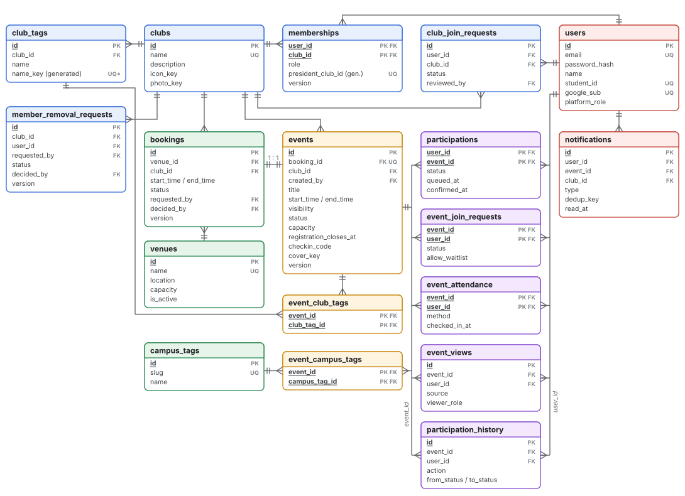
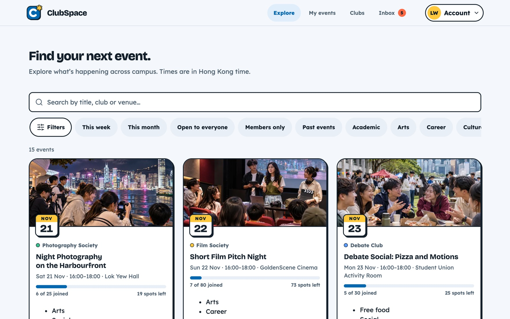
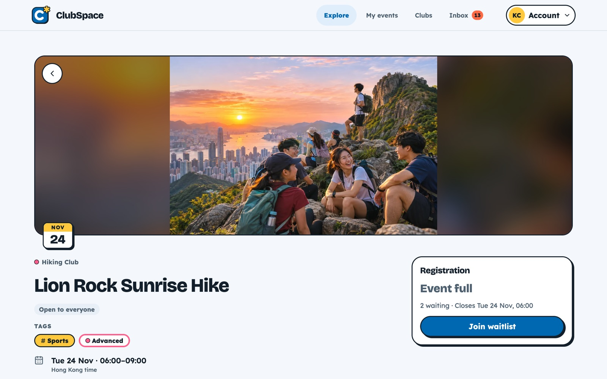
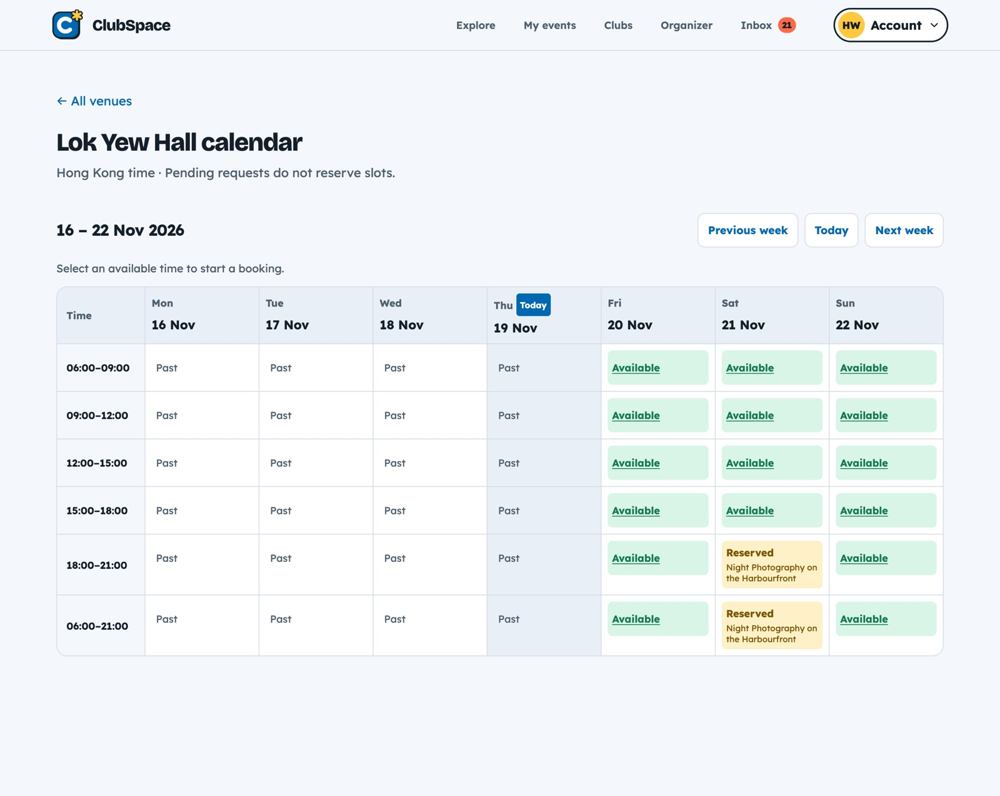
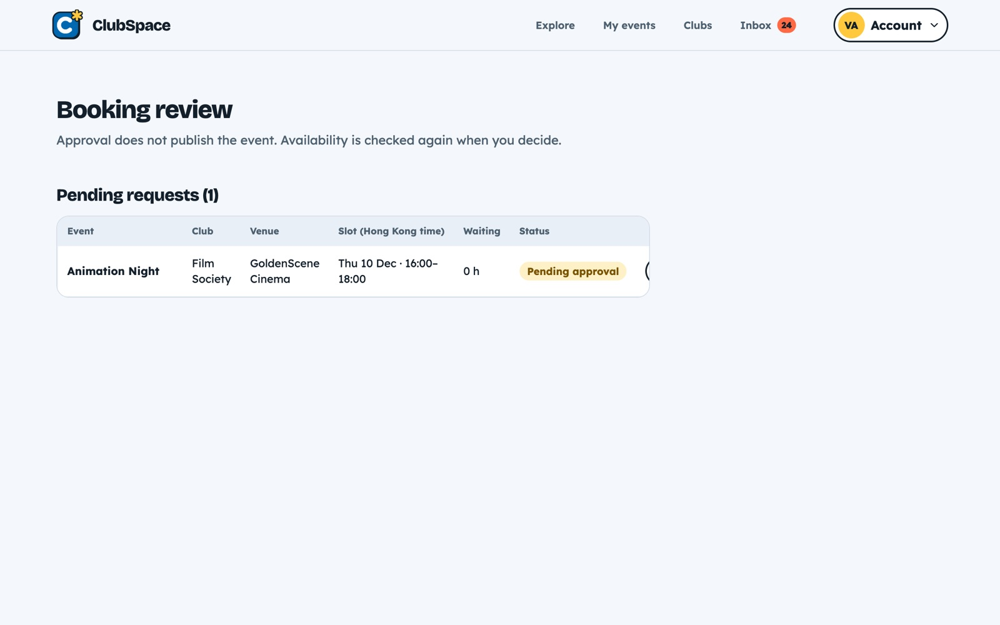
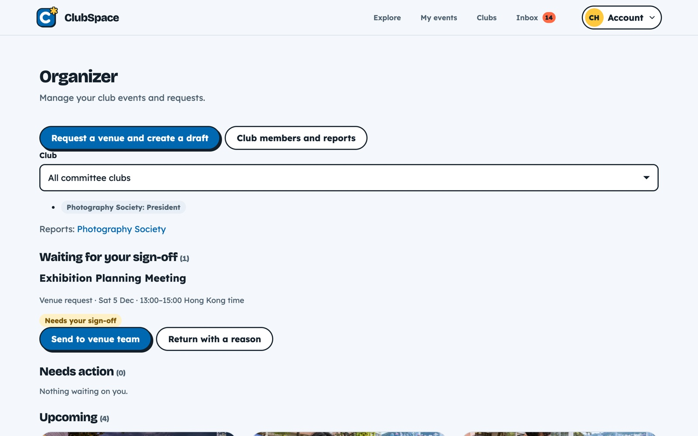
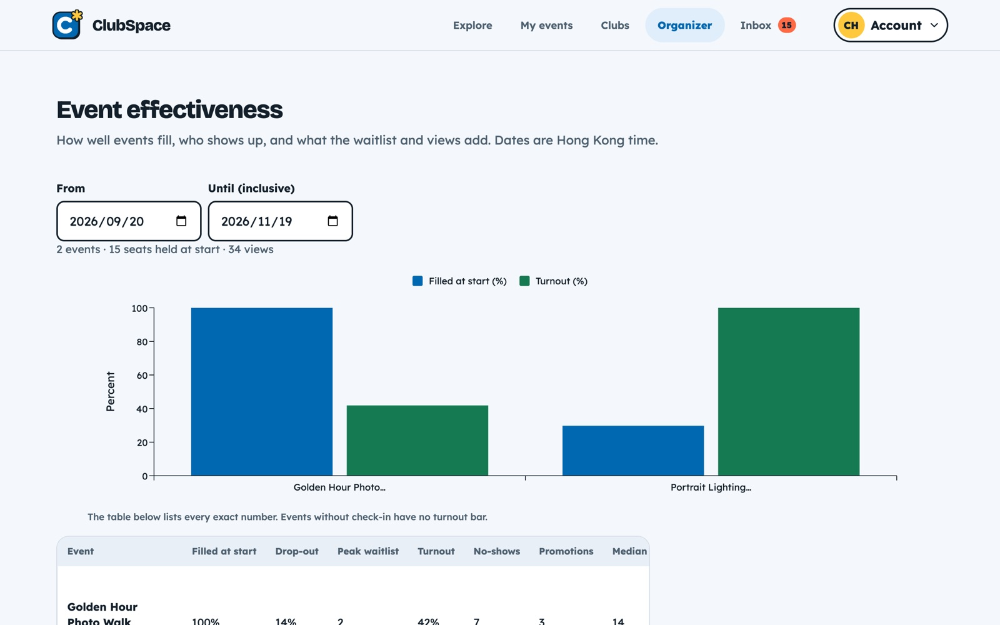
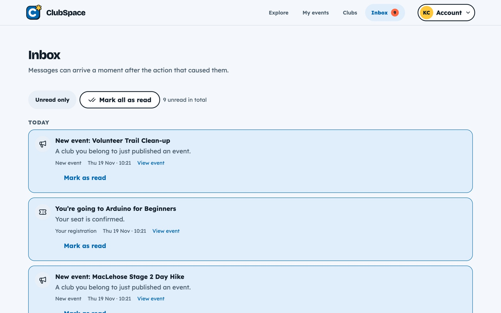
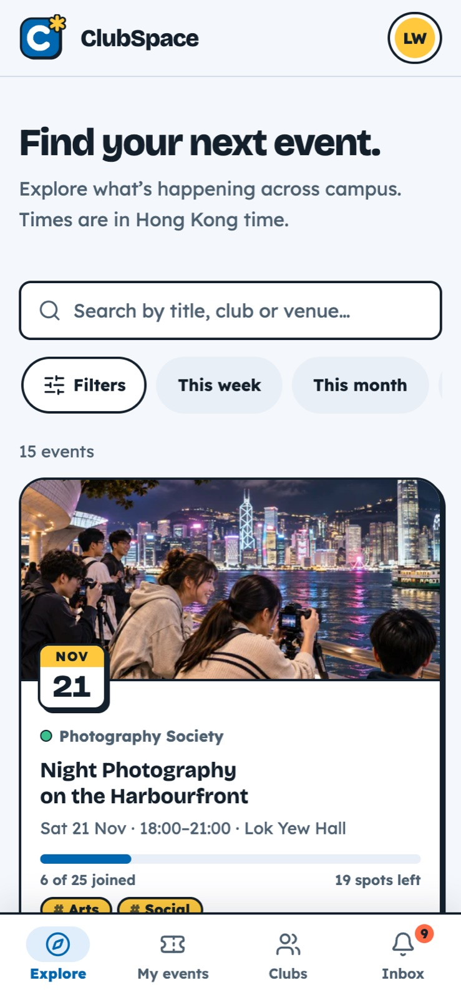

ClubSpace: University Club Event & Venue Management Platform.
ClubSpace is a responsive single-page web application that coordinates university club events, venue requests and student participation in one place. Club committee members prepare an event and request a campus venue in a single step. The club president signs the request off, and a venue administrator approves or rejects it. The database guarantees that a room is never double-booked. Once the venue is confirmed, the event is published. Students can then browse and filter events, register, or join a first-in, first-out waitlist when the event is full. On the day they check in with a four-digit code. Notifications and seat counts update live, and club leaders see attendance and effectiveness reports.
Discover events across clubs, see eligibility and remaining places, register or wait-list, check in, and get reminders.
Request venues, draft and manage events, accept join requests, mark attendance and read reports. The president manages roles, signs off venue requests and publications, can hand over the presidency, and can undo club actions.
Review pending venue requests across clubs. Availability is re-checked when they decide, and they cannot decide a request for a club they serve on.
University clubs usually handle venue booking, event publicity and sign-ups in separate places such as forms, chat groups and spreadsheets. This leads to conflicting room bookings, students who cannot find events or are unsure whether they have a place, and organisers who cannot tell whether an event worked. ClubSpace puts the whole process into one auditable workflow with clear statuses at every step. A web application suits this because it needs no installation, works on phones and desktops, and keeps one shared record of bookings and registrations.
| Layer | Technology |
|---|---|
| Frontend (SPA) | React 19, React Router 7, MUI 9 and MUI X Charts, built with Vite; responsive, with bottom tabs on phones. |
| Backend (REST API) | Node.js 22 and Express 5, a versioned REST API under /api/v1, express-session, Multer and sharp for cover images, and openid-client for Google sign-in. |
| Database | MySQL 8.4 accessed through mysql2, with a baseline schema and 15 ordered, checksummed migrations. |
| Asynchronous processing | Durable job queue (transactional outbox) with a separate worker; Server-Sent Events for live updates. |
| Deployment | Docker Compose on the Ubuntu VM c3322-pg19.cs.hku.hk, with nginx serving HTTPS through a self-signed certificate. |
Every must-have feature from the proposal is implemented and deployed. Must-have marks proposal core scope, Bonus the proposed bonus, and Extra features added after the beta interview feedback.
| Area | What users can do | Scope |
|---|---|---|
| Accounts and profiles | Register, sign in and out, and edit a persistent profile. Sessions are HttpOnly cookies stored in MySQL. Every change needs a CSRF token and a matching Origin. Logins are rate-limited. | Must-have |
| Clubs and membership | Browse clubs, request to join (the committee accepts or rejects), and leave. Belong to several clubs with club-specific roles: member, committee or president. Only one president per club is enforced in the database. | Must-have |
| Venues and calendar | Weekly venue calendars with three campus slots (10:00–12:00, 13:00–15:00, 16:00–18:00 HKT). Private bookings show only "Reserved". Pending requests do not reserve a slot. | Must-have |
| Venue requests and approval | Create an event draft and venue request together. The venue administrator approves or rejects with a reason. Overlaps are re-checked under row locks when approving, and administrators cannot decide their own club's request. | Must-have |
| Event management | Publish separately after approval. Edit with optimistic version checks. Cancel, which cancels the booking, registrations and pending requests in one transaction. Public or members-only visibility, and participant lists for the committee. | Must-have |
| Discovery and participation | Search and filter events by date, club, visibility and tags, and see upcoming and past events. Register or withdraw subject to eligibility, deadline and capacity. A first-in, first-out waitlist promotes the next student automatically, and "My events" lists your registrations. | Must-have |
| Notifications and reminders | Persistent in-app inbox for workflow changes, with event reminders and a daily 09:00 HKT club digest produced by a background worker. Retries are capped, and duplicates are prevented by unique keys. | Must-have |
| Organiser reports | Registration counts, daily registration actions and booked venue hours as charts, each with an equivalent data table. | Must-have |
| Reliability and deployment | Layered API, data-preserving migrations, consistent JSON errors with request IDs, concurrency tests for final-seat and conflicting approvals, and Docker Compose deployment. | Must-have |
| Google sign-in | "Continue with Google" via OpenID Connect with backend token verification. New users complete their profile (student ID). Accounts are linked by verified email. | Bonus |
| President sign-off | Committee venue requests and publications wait for the president, who sends them on or returns them with a reason. The president can also transfer the presidency. | Extra |
| Live updates (SSE) | Notifications, seat counts, waitlist changes and check-ins reach open pages within about two seconds over Server-Sent Events, without reloading. | Extra |
| Check-in and attendance | A four-digit check-in code is shown during the event window, or the committee marks attendance by hand. | Extra |
| Effectiveness report | Fill rate, turnout, drop-outs, no-shows, peak waitlist, promotions and view-to-join by source, with comparisons by tag, weekday and slot. | Extra |
| Tags and covers | Admin-curated campus tags (1–3 per event) and club tags (0–5 per event), both filterable. Event cover images (JPEG or WebP up to 5 MB) are resized by sharp. | Extra |
| Club action log | The president sees a history of committee actions and can undo the ones that are safe to undo. | Extra |
| Members-only join requests | Students outside a club can request a place at a members-only event, and the committee decides. | Extra |
| Credits, privacy and terms | An in-app /credits page as the guideline requires, plus public privacy policy and terms pages for the Google consent screen. | Extra |
The planned split from the proposal, and the main pieces each member delivered according to the Git history of main. All members took part in integration, testing, interviews and documentation.
| Member | Planned responsibility | Main contributions delivered |
|---|---|---|
| Chan Ka Ho Charlie 3035927104 |
Backend and API, authentication, authorisation, event business logic |
|
| Lucien Balthazar Neale 3036720486 |
React frontend, UI components, pages, event browsing and participation |
|
| Chan Ka Hei Aubrey 3036388381 |
MySQL database design, venue/booking logic, Docker deployment |
|
Six Docker Compose services on one Linux VM. Only nginx is reachable from outside, and MySQL's port 3306 is never published.
migrate applies schema migrations before the API and worker start, and seed loads demo data into an empty database.| Layer | Responsibility |
|---|---|
| Middleware | Request ID, JSON body limit, session loading, CSRF token and Origin check on every change, and one error handler that turns errors into { error: { code, message, fields, request_id } }. |
Routers (api_v1/) | One router per area (auth, clubs, events, registration, engagement, reports, covers, notifications, Google). They validate input, check role and club permission, and pick the status code. |
| Transactions and queries | Business rules run inside MySQL transactions with an explicit lock order (venue → club → bookings → event → participations), so concurrent requests cannot oversell seats or double-book a room. SQL lives in query/repository modules, kept apart from HTTP code. |
| Jobs and live delivery | Side effects (notifications, reminders) are written to notification_jobs in the same transaction as the change (transactional outbox). The worker claims due jobs with lease tokens. The SSE hub follows the notifications and live_signals tables and pushes them to open connections. |
Check constraints (time order, capacity 1–500, deadline before start), a generated column that allows only one president per club, unique keys for idempotency, and an optimistic version column on bookings, events and memberships.
Jobs are tried up to 5 times, waiting 5 s, 30 s, 2 min and then 10 min between attempts. A unique action_key and dedup_key make retries harmless, and failed jobs can be re-queued by an operator with an audit entry.
Updates only flow from server to client, so SSE over plain HTTP through nginx is simpler. Last-Event-ID lets a reconnecting client catch up on missed notifications.
Times are stored as UTC DATETIME(6) and exchanged as ISO 8601 UTC. The UI shows Hong Kong time. Campus slots and the 09:00 digest are calculated in Asia/Hong_Kong.

schema.sql plus migrations up to 018_google_identity). Crow's-foot notation: a bar is "one" and a fork is "many". The two vertical buses carry the event_id and user_id foreign keys of the per-student tables. PK primary key, FK foreign key, UQ unique. Infrastructure tables are listed on the next page.| Table | Purpose |
|---|---|
users | Accounts with a platform role (student or venue_admin), a unique email and student ID, and an optional Google subject for linked sign-in. |
clubs, memberships, club_join_requests | Clubs; the many-to-many link between users and clubs with a club role (member, committee, president); and requests to join, decided by the committee. |
venues, bookings | Rooms and time-slot requests. Status: awaiting_president → pending → confirmed / rejected, or returned / cancelled. |
events | Exactly one event per booking (unique booking_id; a composite foreign key keeps the club consistent). Holds capacity, visibility, registration deadline, check-in code and cover. |
participations, participation_history | Current registration state per student and event (joined, waitlisted, left, cancelled and others), plus an append-only history used by the reports. |
event_join_requests | Requests from non-members for members-only events. |
event_attendance, event_views | Check-ins (by code or marked by the committee), and de-duplicated page views by source for the effectiveness report. |
campus_tags, club_tags and their link tables | Admin-curated campus tags and per-club tags, linked to events many-to-many. |
notifications | Each user's inbox. The unique (user_id, dedup_key) prevents duplicate deliveries. |
notification_jobs | Durable outbox and job queue: due time, attempts (at most 5), lease token and last error. |
live_signals | Short-lived "event N changed" hints that the SSE hub fans out so open pages refetch. |
audit_logs, club_action_log | Audit trail of booking and event decisions, and the president's undoable club action history. |
sessions, activity_digests, worker_heartbeats | Server-side session store; one row per club per day once its digest is sent; worker liveness. |
schema_migrations, schema_metadata | Applied migration versions with SHA-256 checksums, and the schema version marker. |
president_club_id = IF(role='president', club_id, NULL) with a unique index.SELECT … FOR UPDATE).end_time > start_time; event capacity between 1 and 500; venue capacity > 0; registration_closes_at ≤ start_time; at most 5 job attempts.name_key = LOWER(name) that is unique per club.notification_jobs.action_key, notifications(user_id, dedup_key), audit_logs.action_id, and event_views(event_id, user_id, bucket).A RESTful JSON API under /api/v1, served through nginx at https://c3322-pg19.cs.hku.hk/api/v1. The SPA uses only this version.
{ "data": …, "meta": … }. List responses are paginated with page and page_size.{ "error": { "code", "message", "fields", "request_id" } }.X-CSRF-Token and a matching Origin.version to detect stale edits.200 201 204 | OK · created · no body |
202 | Request queued for approval (join requests) |
400 / 422 | Malformed JSON / validation failed (per-field) |
401 / 403 | Not signed in / not allowed, bad CSRF or origin |
404 / 409 | Missing or hidden / conflict (slot taken, full, stale) |
413 415 429 | Upload too large · not JPEG or WebP · rate limited |
500 / 503 | Unexpected error / database unavailable |
Access: Public means no sign-in; User any signed-in user; Committee a committee member or the president of that club; President that club's president; Admin a venue administrator. All paths are relative to /api/v1.
| Method | Path | Access | Purpose |
|---|---|---|---|
| GET | /config | Public | Feature flags, e.g. whether Google sign-in is enabled |
| GET | /auth/csrf | Public | Issue the CSRF token for this session |
| POST | /auth/register | Public | Create an account and sign in (201) |
| POST | /auth/login | Public | Sign in with email and password (rate-limited) |
| GET | /auth/session | Public | Current user, or 401 |
| POST | /auth/logout | User | End the session (204) |
| GET PATCH | /profile | User | Read or update name, student ID and password |
| GET | /api/auth/google/start, …/callback | Public | Google OpenID Connect redirect and callback (bonus) |
| Method | Path | Access | Purpose |
|---|---|---|---|
| GET | /clubs | User | Clubs with the caller's membership status and role |
| GET | /me/memberships | User | The caller's clubs and roles |
| PUT DELETE | /clubs/:id/membership | User | Request to join (202) or leave (204) |
| GET | /clubs/:id/join-requests | Committee | Pending join requests |
| POST | /clubs/:id/join-requests/:rid/review | Committee | Accept or reject a join request |
| GET | /clubs/:id/members | Committee | Members and roles |
| PATCH DELETE | /clubs/:id/members/:user_id | President / Committee | Change a role (president only), or remove a member |
| DELETE | /clubs/:id/committee | Committee | Step down from the committee |
| POST | /clubs/:id/presidency | President | Hand the presidency to a committee member |
| GET | /clubs/:id/actions | President | Club action log |
| POST | /clubs/:id/actions/:aid/undo | President | Undo an undoable club action |
| GET POST | /tags | User / Admin | List campus tags, or create one (admin) |
| PATCH | /tags/:id | Admin | Rename or retire a campus tag |
| GET POST | /clubs/:id/tags | User / Committee | List or create club tags |
| DELETE | /clubs/:id/tags/:tag_id | Committee | Delete a club tag |
| Method | Path | Access | Purpose |
|---|---|---|---|
| GET | /venues | User | Active venues with capacity and location |
| GET | /venues/:id/calendar | User | Week of slots: available, reserved or past (private details hidden) |
| GET | /bookings | Admin | Venue requests waiting for a decision |
| POST | /bookings/:id/decision | Admin | Approve or reject with a reason. Re-checks overlap (409); 403 for own club |
| POST | /bookings/:id/signoff | President | Send a committee venue request to the venue team, or return it |
| GET | /me/signoffs | President | Venue requests and publications waiting for the president |
| Method | Path | Access | Purpose |
|---|---|---|---|
| GET | /events | User | Published events, paginated, with filters: q, club_id, venue_id, visibility, phase (upcoming/past), from/to, tag |
| POST | /events | Committee | Create an event draft and its venue request together (201) |
| GET PATCH | /events/:id | User / Committee | Event detail, or edit with a version check (409 if stale) |
| POST | /events/:id/publish | Committee | Publish an approved draft. A committee member's request waits for the president |
| POST | /events/:id/signoff | President | Approve the publication, or return it to draft with a reason |
| POST | /events/:id/cancel | Committee | Cancel the event, its booking, registrations and pending requests |
| PUT DELETE | /events/:id/cover | Committee | Upload a JPEG or WebP cover (≤ 5 MB), or remove it |
| GET | /events/:id/cover/:size | User | Resized cover image |
| GET | /me/events | Committee | Events of the caller's clubs, by state |
| Method | Path | Access | Purpose |
|---|---|---|---|
| POST DELETE | /events/:id/registration | User | Register, join the waitlist, or ask to join (members-only); withdraw |
| GET | /me/registrations | User | The caller's registrations and waitlist positions |
| GET | /events/:id/participants | Committee | Participant list |
| GET | /events/:id/join-requests | Committee | Requests for a members-only event |
| POST | /events/:id/join-requests/:user_id/decision | Committee | Accept or reject a request |
| POST | /events/:id/checkin | Committee | Open check-in (from 30 min before the start to 2 h after the end) and get the four-digit code |
| POST | /events/:id/attendance | User | Check in with the four-digit code |
| GET | /events/:id/attendance | Committee | Attendance list |
| PUT DELETE | /events/:id/attendance/:user_id | Committee | Mark or unmark a participant as present |
| POST | /events/:id/views | User | Record a view and its source (204) |
| GET | /clubs/:id/reports | Committee | Participant counts, daily registration actions, venue hours |
| GET | /clubs/:id/reports/effectiveness | Committee | Fill rate, turnout, drop-out, waitlist and view-to-join |
| Method | Path | Access | Purpose |
|---|---|---|---|
| GET | /notifications | User | Inbox, newest first, with unread count |
| PATCH | /notifications/:id/read | User | Mark one notification as read |
| GET | /notifications/stream | User | Server-Sent Events stream of notifications and live hints (text/event-stream) |
| GET | /api/health | Public | {"status":"ok"}, or 503 when MySQL is unreachable |
POST /api/v1/events/10/registration
Cookie: clubspace.sid=… X-CSRF-Token: 6c1f… Origin: https://c3322-pg19.cs.hku.hk
{ "allow_waitlist": true }
201 Created
{ "data": { "event_id": 10, "status": "waitlisted", "queue_position": 3,
"joined_count": 6, "waitlisted_count": 3 } }
409 Conflict (when the event is full and allow_waitlist is false)
{ "error": { "code": "EVENT_FULL", "message": "This event is full.", "request_id": "…" } }
The full contract, with every request and response shape and error code, is in openspec/changes/expand-clubspace-workflows/handoff/api.md in the repository.
The core of ClubSpace is a multi-party approval workflow. Booking and event states change only inside database transactions.
A registration locks the event's participation rows (FOR UPDATE), counts joined seats and either confirms, wait-lists (first in, first out by queued_at), or answers 409. When a seat is freed by a withdrawal, a capacity increase or a removal, the first eligible wait-listed student is promoted in the same transaction. That student is notified, and every change is written to participation_history.
All writers lock rows in one fixed order (venue → club → bookings → event → participations) to avoid deadlocks. Optimistic version columns reject stale edits. Database tests open independent MySQL connections to race two approvals for the same slot and two students for the last seat, and check that exactly one wins.
Every 5 s the worker claims due jobs using a lease token. It commits the claim before taking any domain lock. Every 60 s it scans for reminders and digests. Failed jobs back off and stop after 5 attempts. A heartbeat row shows that the worker is alive.
The SSE hub in the API process follows the shared notifications and live_signals tables, so rows written by the worker arrive the same way. Public hints ("event 10 changed") go to everyone, and committee-only hints go to that club. Pages then refetch through the normal authorised routes, so no private data travels in a hint.
Screenshots of the final build with the demo data. The same code runs on c3322-pg19.cs.hku.hk.








The server runs the main branch cloned from GitHub to ~/clubspace-pg19. Nothing is edited on the server, so the deployed code always matches GitHub. The README contains the full step-by-step guide. In short:
git clone https://github.com/LunarTear1014/PG19-ClubSpace.git clubspace && cd clubspace
(umask 077; printf 'MYSQL_ROOT_PASSWORD=%s\nMYSQL_PASSWORD=%s\nSESSION_SECRET=%s\n' \
"$(openssl rand -hex 24)" "$(openssl rand -hex 24)" "$(openssl rand -hex 32)" > .env)
docker compose up -d --build # db → migrate → backend + worker → web → seed
curl -fsS http://127.0.0.1/api/health # {"status":"ok"}
.env, the TLS key and the Google client secret are git-ignored. .env.example is the committed template.https redirect URI. Port 80 redirects to 443..dockerignore files, the backend image is built once and reused by migrate, seed and worker, and container logs are capped.mysqldump, pulls main (fast-forward only), rebuilds, and lets migrate apply new migrations before the API starts.On an empty database, the seed creates 5 clubs, 5 venues, 37 accounts and 25 events through the real API. These include past events with check-ins, a full event with a waitlist, members-only events with pending requests, and requests still in the approval workflow. Every account uses the password clubspacetest123.
| Sign in as | Try |
|---|---|
admin@clubspace.example | Approve or reject Film Society's Animation Night venue request |
president.photo@clubspace.example | Sign off the Exhibition Planning Meeting request, accept a join request, promote a member |
president.debate@clubspace.example | Approve the publication of Debate Workshop: Rebuttals |
committee1.debate@clubspace.example | Create an event and request a venue; review members-only join requests |
member1.hiking@clubspace.example | Lion Rock Sunrise Hike: full, with a waitlist |
student1@clubspace.example | Register for a public event and watch the seat count update in a second browser |
explain.db.test.js checks that hot queries use their indexes. These include the booking overlap check, the admin review queue, waitlist order, job claims, reminder scans and the inbox.All project code was written by the three team members, with AI tools used as the course policy allows. As the guideline requires, third-party libraries, fonts and assets are credited on the in-app credits page at /credits.
| Area | Credited libraries and assets |
|---|---|
| Frontend | React and React DOM, React Router, MUI Material UI, MUI X Charts, Emotion, Lucide icons |
| Fonts | Bricolage Grotesque, Lexend |
| Backend | Node.js and Express, express-session, mysql2, Multer, sharp, dotenv |
| Database and infrastructure | MySQL 8.4, Docker and nginx |
| Tooling | Vite, Vitest and Testing Library, Oxlint |
| Demo images | Cover images for the fictional demo clubs and events, generated with OpenAI's GPT image generation (backend-beta/db/demo-images/). All demo people are fictional and use the reserved .example domain. |
frontend-beta/ React + Vite SPA, Dockerfile, nginx config
backend-beta/ Express API (src/api_v1), worker, ops scripts,
db/schema.sql, db/migrations/, tests
openspec/ specifications and the full v1 API contract
proposal/ Proposal.md
docs/final-report/ sources of this PDF (HTML, ER diagram generator, screenshots)
compose.yaml Docker Compose deployment (six services)
README.md deployment URL, rebuild guide, operations
ARCHITECTURE.md architecture summary and ER diagram